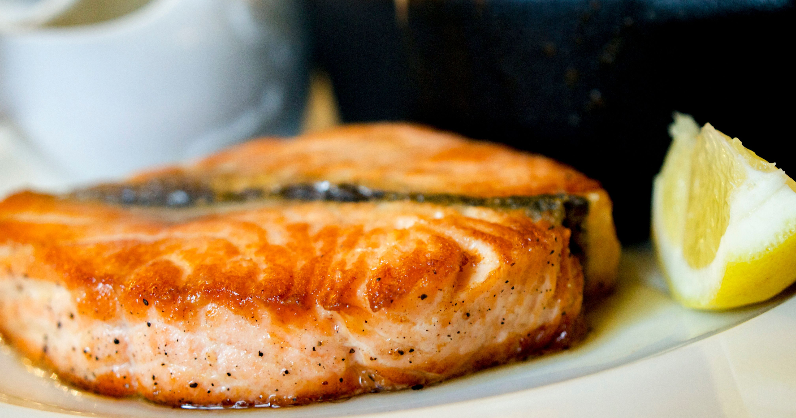
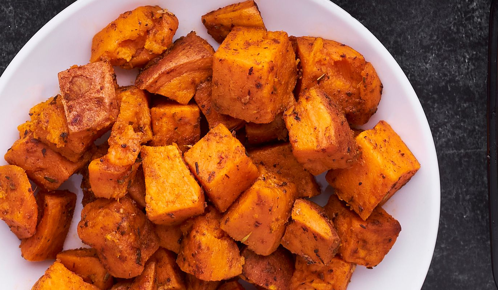

Batata-doce e salmão no mesmo cesto, e um molho de iogurte e limão em 1 minuto.

Batata-doce em cubos de 2 cm, com azeite, sal e pimentão-doce.
Air fryer a 200 °C. Agita o cesto a meio.
Entretanto: iogurte, raspa e sumo de ½ limão e uma pitada de sal.
Salmão com sal e pimenta, pele para baixo, ao lado das batatas.
Mais 8 minutos a 200 °C, até lascar com o garfo.
Serve com o molho de iogurte e uma fatia de limão.
Comenta A ou B
Segue @tocaajantar: receitas rápidas todos os dias.
Guarda para a próxima vez que ligares a air fryer.
Tempos aproximados · Confirma alergénios (contém peixe e leite)